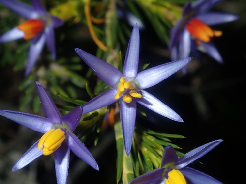

Dasypogonaceae
Dasypogon Family
Dasypogonaceae is a small family of monocotyledonous flowering plants endemic to Australia, primarily Southwestern Australia. It includes perennial herbs and distinctive tree-like plants adapted to dry, fire-prone environments. Characterized by narrow, linear leaves and dense heads or spikes of small flowers, this family is now recognized as the sister group to the palms (Arecaceae) within the order Arecales.
Overview
The Dasypogonaceae family comprises 4 genera (Baxteria, Calectasia, Dasypogon, Kingia) and about 16 species, nearly all restricted to the biodiversity hotspot of Southwestern Australia. These plants exhibit a range of growth forms, from small, tufted herbs (Calectasia) to robust, rhizomatous perennials and large, tree-like forms with stout, woody trunks (Dasypogon, Kingia), superficially resembling grass trees (Xanthorrhoeaceae) or small palms.
They are well-adapted to the Mediterranean climate and frequent fires of their habitat, often possessing lignotubers or resprouting capabilities. Key features include their narrow, linear, often stiff leaves with sheathing bases, and small, typically 3-merous flowers aggregated into dense terminal heads or spikes (or stalked axillary heads in Kingia). The phylogenetic placement of Dasypogonaceae was long debated, but strong molecular evidence now places it as the sole sister family to Arecaceae (the palms) in the monocot order Arecales.
Some species, like the striking Blue Tinsel Lily (Calectasia cyanea) or the iconic Black Gin (Kingia australis), are notable elements of the unique Australian flora.
Quick Facts
- Scientific Name: Dasypogonaceae Dumort.
- Common Name: Dasypogon Family
- Number of Genera: 4
- Number of Species: Approximately 16
- Distribution: Australia (primarily Southwestern Australia, one species in SE Australia).
- Evolutionary Group: Angiosperms - Monocots - Commelinids - Arecales
- Habit: Perennial herbs or tree-like monocots, often fire-adapted
Key Characteristics
Growth Form and Habit
Plants are perennial herbs or develop into robust, tree-like monocots with thick, woody, sometimes branched stems formed from persistent leaf bases (e.g., Kingia, Dasypogon). Many are rhizomatous or possess lignotubers, enabling survival and resprouting after fire.
Leaves
Leaves are arranged alternately and spirally, usually crowded along the stem or forming basal rosettes or dense terminal crowns. They are linear, narrow, often long, stiff, and fibrous, resembling grass leaves or straps, typically with sharp points. Venation is parallel. Leaves possess a distinct sheathing base that often persists on the stem. Stipules are absent.
Inflorescence
Flowers are aggregated into dense, terminal heads or spikes, often subtended by prominent, sometimes papery or colored bracts. In Kingia, the inflorescences are distinctive small, globose heads borne on long, slender stalks (scapes) arising from the leaf axils around the terminal apex of the trunk.
Flowers
Flowers are small, numerous, usually bisexual (rarely unisexual), and radially symmetrical (actinomorphic). They are typically 3-merous, a common feature of monocots.
- Perianth: Consists of 6 tepals arranged in two similar whorls of 3 (indistinguishable sepals and petals). Tepals are free or slightly fused at the base, often dry, papery (scarious), persistent, and brownish, yellowish, or sometimes blue/purple (Calectasia).
- Androecium: Contains 6 stamens arranged in two whorls of 3, positioned opposite the tepals. Filaments may be free or attached to the base of the tepals. Anthers typically open via longitudinal slits.
- Gynoecium: Features a superior ovary (usually; inferior in Baxteria) composed of 3 fused carpels, forming 3 locules (chambers), or sometimes reduced to 1 locule by abortion. A single style, often short, is topped by 3 stigmatic lobes or branches. Each locule typically contains a single ovule with basal or axile placentation.
Fruits and Seeds
The fruit is typically a small, dry, indehiscent, one-seeded nutlet or sometimes a capsule that opens tardily. The fruit is often enclosed by the persistent, dry perianth parts. Seeds are small and contain endosperm.
Chemical Characteristics
Chemical composition is not as extensively studied as in some other major groups but includes phenolic compounds typical of monocots.
Field Identification
Identifying Dasypogonaceae requires recognizing their monocot features, specific inflorescence types, and Australian distribution:
Primary Identification Features
- Monocot habit: Herbaceous or tree-like with fibrous stems (not true wood like dicots).
- Narrow, linear leaves: Grass-like or strap-like leaves, often stiff, crowded on stems or in rosettes, with sheathing bases.
- Dense flower heads or spikes: Flowers tightly packed into terminal structures (or stalked axillary heads in Kingia).
- Small, 6-parted flowers: Flowers have 6 tepals (often dry/papery) and 6 stamens.
- Australian distribution: Endemic to Australia, mostly Southwestern Australia.
Secondary Identification Features
- Woody-looking trunks (in some): Tree-like forms (Kingia, Dasypogon) have thick trunks covered in persistent leaf bases.
- Fire adaptations: Look for blackened trunks, lignotubers, or evidence of resprouting after fire.
- Dry, papery perianth: Tepals often persist around the fruit and feel dry.
- Habitat: Often found in dry sclerophyll forests, woodlands, or heathlands on sandy soils.
Seasonal Identification Tips
Vegetative features are useful year-round, while reproductive structures are seasonal:
- Year-round: Habit (herb vs. tree-like), leaf arrangement (crowded/rosette), leaf shape (linear, sheathing base), and trunk structure (if present) are constant.
- Flowering Season (Varies, often spring/summer): Dense heads or spikes of small flowers are diagnostic. Kingia's "drumstick" flower heads are unmistakable.
- Fruiting Season: Small nutlets or capsules, often hidden within persistent perianth parts, develop after flowering. Old inflorescence structures may persist.
- Post-Fire: Look for resprouting from bases or trunks, and sometimes mass flowering events.
Common Confusion Points
Distinguishing Dasypogonaceae from other Australian monocots with similar habits:
- Xanthorrhoeaceae (Grass Trees): Have a similar tree-like habit with persistent leaf bases and linear leaves, but the inflorescence is a very dense, long spike borne on a distinct, thick central scape arising from the apex. Flower details also differ. Belong to Asparagales.
- Restionaceae (Rushes): Superficially similar grass-like or rush-like habit, but flowers are highly reduced, wind-pollinated, and arranged in spikelets within complex inflorescences. Stems often photosynthetic, leaves reduced. Belong to Poales.
- Poaceae (Grasses): Grasses have characteristic nodes/internodes, ligules at the leaf sheath junction, and flowers (florets) enclosed in bracts (lemma/palea) arranged in spikelets. Belong to Poales.
- Arecaceae (Palms): While related, palms in Australia are typically much larger, have distinctly different leaf structures (pinnate or palmate, not linear/grass-like), and large, branched inflorescences (spadices).
- Focus on the combination: Monocot + Narrow Linear Leaves (often crowded/stiff) + Dense Terminal Heads/Spikes (or stalked heads in Kingia) + 6 Tepals/6 Stamens + Australian Endemism = Dasypogonaceae.
Field Guide Quick Reference
Look For:
- Monocot herb or tree-like form
- Leaves: Linear, narrow, stiff, crowded/rosette, sheathing base
- Inflorescence: Dense terminal head or spike (or stalked axillary heads in Kingia)
- Flowers: Small, 3-merous
- Perianth: 6 tepals (often dry/papery)
- Stamens: 6
- Ovary superior (mostly)
- Fruit: Nutlet or capsule
- Australian endemic (mostly SW)
Key Variations:
- Habit (herb vs. tree-like)
- Inflorescence position/structure (Kingia vs. others)
- Flower color (mostly dull, but blue in Calectasia)
- Fire adaptation strategies
Notable Examples
The four genera show distinct habits within the family:

Kingia australis
Black Gin / Blackboy (shared name)
A distinctive tree-like monocot from Southwestern Australia with a thick, unbranched trunk covered in persistent leaf bases, topped by a dense crown of long, linear leaves. Produces unique globular flower heads on long stalks arising from the leaf crown.

Dasypogon hookeri
Pineapple Bush / Drumsticks
Forms large tussocks or develops short, stout stems in Southwestern Australia. Leaves are stiff and sharp. Produces dense, terminal, ovoid or cylindrical flower heads/spikes subtended by prominent bracts.

Calectasia cyanea
Blue Tinsel Lily / Star of Bethlehem
A small, rhizomatous perennial herb from Southwestern Australia. Unlike other genera, it has relatively conspicuous, star-like blue or purple flowers (tepals are petaloid and metallic-shiny) borne solitarily or in small clusters, subtended by brownish bracts.
Phylogeny and Classification
The phylogenetic placement of Dasypogonaceae has been a subject of considerable debate. Historically, it was sometimes placed near families like Xanthorrhoeaceae or even Liliaceae, or in its own order, Dasypogonales. However, robust molecular phylogenetic studies in the 21st century have surprisingly revealed its true position.
Dasypogonaceae is now firmly placed within the order Arecales, a lineage within the Commelinid clade of monocots. Remarkably, Dasypogonaceae is the sole sister family to the Arecaceae (the Palm family). This means that these distinctive Australian plants are the closest living relatives to all the world's palms, despite their vastly different appearance and geographic distribution. This relationship highlights deep evolutionary connections within the monocots and underscores the importance of Australia as a center of ancient plant lineages.
Position in Plant Phylogeny
- Kingdom: Plantae
- Clade: Angiosperms (Flowering plants)
- Clade: Monocots
- Clade: Commelinids
- Order: Arecales
- Family: Dasypogonaceae
Evolutionary Significance
Dasypogonaceae holds considerable evolutionary importance:
- Sister Group to Palms: Its position as the closest relative to the massive and ecologically dominant Arecaceae provides crucial insights into the early evolution and diversification of the Arecales order and the Commelinid monocots.
- Australian Endemism: Represents an ancient lineage largely confined to Australia, highlighting the continent's role as a refuge and center of diversification for unique plant groups.
- Adaptation to Environment: Shows remarkable adaptations (tree-like habit, fire tolerance) to the specific environmental conditions of Australia, particularly the fire-prone ecosystems of the Southwest.
- Phylogenetic Resolution: The clarification of its phylogenetic position demonstrates the power of molecular data in resolving long-standing uncertainties about plant relationships.